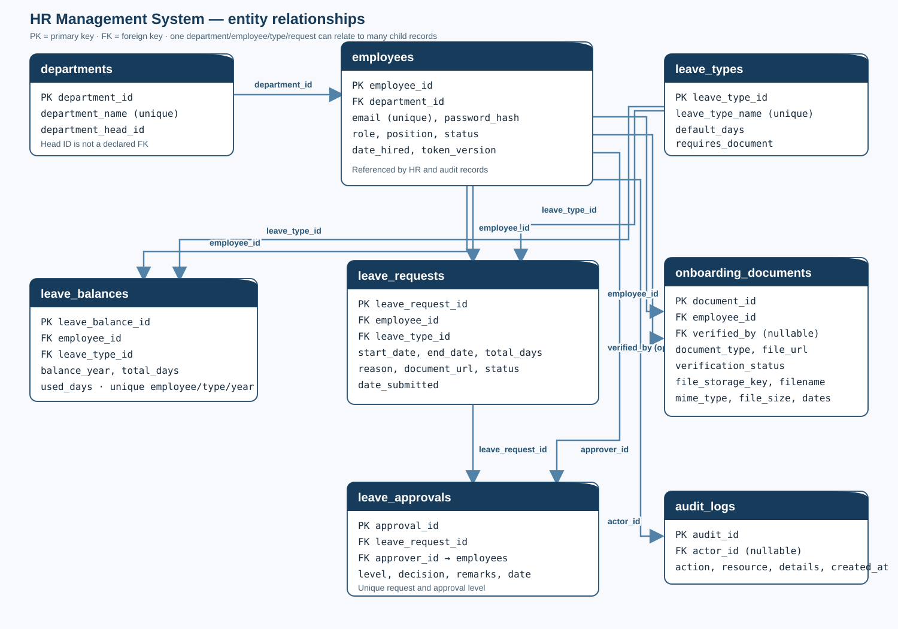

Submission draft: complete the cover fields and add genuine evidence and the shareable video link before final submission.
Course: ITEC 116 — IT Elective 4 (Systems Integration and Architecture 2)
Project type: Individual final project
Student: Justine Tumampil
Section: Add/confirm section
Instructor: Add instructor name
GitHub repository: HR-Management-System
Video walkthrough: Add the shareable 5–10 minute video URL before final submission
Presentation date: November 28, 2026
The HR Management System is a full-stack prototype for employee onboarding and leave administration. It supports employees, department heads, and HR managers through role-specific access.
| User | Main tasks |
|---|---|
| Employee | View leave balances, submit and track leave, manage documents, change password |
| Department Head | Review assigned department leave requests and make approval decisions |
| HR Manager | Manage employees, review documents, and complete assigned approvals |
Manual HR processes make it difficult to track leave balances, prevent overlapping requests, assign approvals, and verify onboarding documents consistently.
The prototype manages employees and departments, leave types and balances, leave requests and approval records, onboarding documents, and audit events. It uses weekday-based leave duration; public holidays are not excluded.
/hr/... and /auth/... routes rather than a /api/v1 prefix.UPLOAD_DIR; the application does not integrate with Google Drive. Older drive:// seed values are demonstration metadata only, not working cloud files.React browser / Postman
|
| HTTP + JWT (Bearer token for API clients;
| HttpOnly cookie for the browser session)
v
NestJS guards -> DTO validation -> Controller
|
v
Service
|
v
TypeORM Repository
Entity / relations
|
v
MySQL
Employee and leave-request CRUD, authentication, and HR resource access use TypeORM entities and repositories. Database initialization and a few aggregate/reservation queries use parameterized SQL through TypeORM's DataSource. Uploaded document bytes are stored in the private upload directory; the database stores metadata and a storage key.
The route prefixes are /hr and /auth; there is no /api/v1 prefix in this implementation. File uploads use a private local directory rather than Google Drive. These choices keep the coursework demo self-contained and avoid requiring cloud credentials or an external upload service; they are implementation differences from earlier lab design ideas, not features that should be described as implemented.
The diagram labels primary keys (PK), foreign keys (FK), and the main one-to-many relationships. Department heads and approval actors are employees; document verifiers are optional employees.

| Entity/table | Purpose | Important keys/relationships |
|---|---|---|
| Department | Department directory and assigned head | department_id PK; employee collection |
| Employee | User identity, role, and employment status | employee_id PK; unique email; department FK |
| LeaveType | Leave categories and policy defaults | leave_type_id PK |
| LeaveBalance | Annual entitlement and used days | Employee and leave-type FKs; unique employee/type/year |
| LeaveRequest | Employee leave application | Employee and leave-type FKs |
| LeaveApproval | Ordered approval decisions | Request and approver FKs; unique request/level |
| OnboardingDocument | Document metadata and verification | Employee and verifier FKs |
| AuditLog | Security and HR action history | Optional actor FK |
The TypeORM mappings are in backend/src/database/entities.ts. The reproducible DDL is in docs/hr_system.sql; backend startup creates missing tables and inserts demonstration records.
Base URL: http://localhost:3001. The system exposes 27 route handlers: 1 root route, 4 authentication routes, and 22 HR routes (including health). Protected endpoints accept an Authorization: Bearer <JWT> header or the browser's HttpOnly session cookie. State-changing requests from Postman must include an allowed Origin header, normally http://localhost:5173.
The method breakdown is 13 GET, 7 POST, 4 PATCH, 1 PUT, and 2 DELETE routes.
| Method | Endpoint | Access | Purpose | Success / common error responses |
|---|---|---|---|---|
| GET | / |
Public | API greeting | 200; 500 |
| GET | /hr/health |
Public | Health status | 200; 500 |
| POST | /auth/login |
Public | Authenticate; returns JWT and sets session cookie | 201; 400, 401, 429 |
| GET | /auth/me |
Signed in | Read current profile | 200; 401 |
| POST | /auth/change-password |
Signed in | Change password and rotate JWT | 201; 400, 401, 409 |
| POST | /auth/logout |
Public | Clear browser session cookie | 201; 403 (invalid Origin) |
| GET | /hr/employees |
HR Manager | List employees | 200; 401, 403 |
| GET | /hr/employees/:employeeId |
HR Manager | Read employee | 200; 401, 403, 404 |
| POST | /hr/employees |
HR Manager | Create employee and initial balances | 201; 400, 401, 403, 404, 409 |
| PATCH | /hr/employees/:employeeId |
HR Manager | Update employee fields | 200; 400, 401, 403, 404, 409 |
| DELETE | /hr/employees/:employeeId |
HR Manager | Deactivate employee while retaining HR history | 200; 401, 403, 404, 409 |
| PATCH | /hr/employees/:employeeId/deactivate |
HR Manager | Legacy deactivate action | 200; 401, 403, 404, 409 |
| POST | /hr/employees/:employeeId/password-reset |
HR Manager | Issue a temporary password | 201; 401, 403, 404 |
| GET | /hr/departments |
Signed in | List departments | 200; 401 |
| GET | /hr/leave-types |
Signed in | List leave types | 200; 401 |
| GET | /hr/leave-balances |
Signed in; HR sees all | Read annual balances and pending reservations | 200; 401 |
| GET | /hr/leave-requests |
Signed in | List requests within the user's access scope | 200; 401 |
| GET | /hr/leave-requests/:requestId |
Signed in | Read an accessible request | 200; 401, 404 |
| POST | /hr/leave-requests |
Signed in | Submit a leave request | 201; 400, 401, 404, 409 |
| PATCH | /hr/leave-requests/:requestId |
Owner | Update a pending request | 200; 400, 401, 404, 409 |
| DELETE | /hr/leave-requests/:requestId |
Owner | Delete a pending request and its pending approval records | 200; 401, 404, 409 |
| GET | /hr/approvals |
Signed in | List approvals assigned to or submitted by the user | 200; 401 |
| PUT | /hr/approvals/:approvalId |
Department Head / HR Manager | Approve or reject an assigned approval | 200; 400, 401, 403, 404, 409 |
| GET | /hr/documents |
Signed in | List documents in the user's access scope | 200; 401 |
| POST | /hr/documents |
Signed in | Upload a PDF, JPEG, or PNG | 201; 400, 401, 413 |
| GET | /hr/documents/:documentId/download |
Owner / authorized reviewer / HR | Download a private upload | 200; 401, 404 |
| PATCH | /hr/documents/:documentId/verification |
HR Manager | Verify or reject a pending document | 200; 400, 401, 403, 404 |
These are expected success codes from NestJS defaults and common errors based on guards, validation, and service checks; they are not a claim that every route/error combination has been individually exercised. POST handlers default to 201; other methods default to 200. The Origin guard can reject state-changing requests whose Origin is not allowed.
The employee and leave-request resources have full CRUD operations. DELETE on an employee intentionally deactivates the account rather than erasing records referenced by HR history. Leave-request deletion is limited to the submitting employee and pending requests.
Create employee
POST /hr/employees
Authorization: Bearer <JWT>
Origin: http://localhost:5173
Content-Type: application/json
{
"DepartmentID": 2,
"FirstName": "Demo",
"LastName": "Employee",
"Email": "demo.employee@example.test",
"Role": "Employee",
"Position": "Analyst",
"InitialPassword": "<INITIAL_PASSWORD>"
}
Successful creation returns 201 Created with the employee's public fields; it never returns the password hash. Validation errors return 400; unauthenticated requests return 401; role failures return 403; missing records return 404; conflicting operations return 409.
Illustrative successful response (201 Created):
{
"EmployeeID": 42,
"DepartmentID": 2,
"FirstName": "Demo",
"LastName": "Employee",
"Email": "demo.employee@example.test",
"Role": "Employee",
"Position": "Analyst",
"DateHired": "2026-11-26",
"EmploymentStatus": "Active"
}
The following are sanitized, illustrative examples based on the DTOs and response mappings. They are documentation examples, not captured Postman evidence. Never publish a live password or JWT; redact tokens in screenshots.
Login
POST /auth/login
Origin: http://localhost:5173
Content-Type: application/json
{
"email": "demo.employee@example.test",
"password": "<PRIVATE_PASSWORD>"
}
Successful response (201 Created; token intentionally redacted):
{
"accessToken": "<JWT_REDACTED>",
"user": {
"EmployeeID": 42,
"DepartmentID": 2,
"FirstName": "Demo",
"LastName": "Employee",
"Email": "demo.employee@example.test",
"Role": "Employee",
"Position": "Analyst",
"DateHired": "2026-11-26",
"EmploymentStatus": "Active",
"MustChangePassword": false
}
}
Create leave request
POST /hr/leave-requests
Authorization: Bearer <JWT>
Origin: http://localhost:5173
Content-Type: application/json
{
"LeaveTypeID": 1,
"StartDate": "2026-12-01",
"EndDate": "2026-12-02",
"Reason": "Example personal leave"
}
Illustrative successful response (201 Created):
{
"LeaveRequestID": 101,
"EmployeeID": 42,
"LeaveTypeID": 1,
"StartDate": "2026-12-01",
"EndDate": "2026-12-02",
"TotalDays": 2,
"Reason": "Example personal leave",
"DocumentURL": null,
"Status": "Pending",
"DateSubmitted": "2026-11-26"
}
Unauthenticated request
GET /hr/employees
Illustrative response when no valid Bearer token or session cookie is supplied (401 Unauthorized):
{
"statusCode": 401,
"message": "Unauthorized"
}
This is a coursework prototype, not a production security certification. A production deployment would also require HTTPS, durable rate-limiting, secrets management, database backups, and a reviewed migration/deployment process.
The backend uses NestJS modules, controllers, services, DTOs, guards, TypeORM entities, and repositories. The main TypeORM entity mappings are in backend/src/database/entities.ts; the HR API is in backend/src/hr/hr.controller.ts and backend/src/hr/hr.service.ts; authentication is in backend/src/auth.
The HR application supports employee management, leave balances and approvals, and private onboarding document workflows. The React frontend is an optional presentation layer; the API can be demonstrated independently with Postman.
HR/
├── backend/
│ ├── src/auth/ # Login, JWT strategy, guards, DTOs
│ ├── src/database/ # TypeORM entities and MySQL initialization
│ └── src/hr/ # HR controllers, services, and DTOs
├── frontend/
│ ├── src/ # React application
│ └── scripts/ # Documentation HTML exporter
├── docs/ # Technical docs, ERD, SQL schema, video guide
└── postman/ # API collection
The controller receives the validated DTO and current user identity, then delegates the operation to the service:
@Post('employees')
@Roles('HRManager')
createEmployee(@Body() dto: CreateEmployeeDto, @Req() request: AuthenticatedRequest) {
return this.hrService.createEmployee(dto, request.user.EmployeeID);
}
The service hashes the initial password, opens a transaction, and persists the employee through a TypeORM repository:
const passwordHash = await hash(dto.InitialPassword, 10);
return this.employeeRepository.manager.transaction(async (manager) => {
const employees = manager.getRepository(EmployeeEntity);
const employee = await employees.save(employees.create({
departmentId: dto.DepartmentID,
email: dto.Email.trim().toLowerCase(),
passwordHash,
role: dto.Role,
position: dto.Position.trim(),
// Other validated employee fields are mapped here.
}));
return this.toEmployee(employee);
});
The actual implementation also checks the department and duplicate email, creates initial leave balances, and writes an audit entry within the transaction.
hr_system database if it does not exist. Apache is optional unless using phpMyAdmin.backend/.env.example to backend/.env and set local connection values and a private JWT secret. Do not commit .env.cd D:\xampp\htdocs\HR\backend, then npm.cmd install if dependencies are not installed.npm.cmd run start:dev; it listens on port 3001.cd D:\xampp\htdocs\HR\frontend, then npm.cmd install if needed and npm.cmd run dev -- --host 0.0.0.0. Vite listens on port 5173.The backend reads configuration from environment variables: DB_HOST, DB_PORT, DB_USER, DB_PASSWORD, DB_NAME, JWT_SECRET, DEMO_HR_PASSWORD, DEMO_EMPLOYEE_PASSWORD, DEMO_DEPARTMENT_HEAD_PASSWORD, FRONTEND_ORIGINS, API_ORIGIN, and UPLOAD_DIR. This document intentionally does not include their private values.
Import postman/HR-System.postman_collection.json into Postman. Set hrPassword; if the seeded account requires a first-login change, set newPassword and run the change-password request. The collection includes:
401.The collection has representative requests, not one request for every route. The endpoint inventory documents the implemented API; do not describe all routes as individually tested unless they have actually been run.
The recorded local validation completed on November 25, 2026:
201 Created.200 OK.401.Insert genuine, sanitized screenshots in this section after recording them. Do not use the illustrative JSON examples above as screenshots or expose an actual JWT.
401 with the passing test visible.The live database export, if required by the course, must be exported separately from phpMyAdmin after the demo. docs/hr_system.sql is reproducible DDL plus sanitized demonstration data, not a dump of the current live database.
The prototype integrates a MySQL-backed HR workflow, REST APIs, JWT authentication, role-based access, validation, and a React client. The design prioritizes leave policy checks, controlled approval, and protected employee documents. Future work includes broader automated endpoint tests, a formal migration strategy, and public-holiday-aware leave calculation.
One implementation challenge was keeping the browser's HttpOnly cookie session and Postman's Bearer-token flow compatible with the same guarded API. The project uses an explicit origin guard for state-changing requests and documents the required Origin header for Postman. A lesson from the work is to test authorization and representative CRUD paths as well as confirm that routes compile.
Configure these names in the ignored local backend/.env file. Values are intentionally omitted from this document and must never be included in screenshots or GitHub:
DB_HOST, DB_PORT, DB_USER, DB_PASSWORD, DB_NAME, JWT_SECRET, DEMO_HR_PASSWORD, DEMO_EMPLOYEE_PASSWORD, DEMO_DEPARTMENT_HEAD_PASSWORD, FRONTEND_ORIGINS, API_ORIGIN, UPLOAD_DIR.
docs/hr_system.sql — repeatable schema and sanitized demonstration dataset for coursework setup.